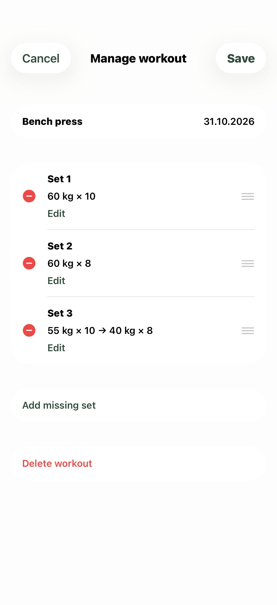
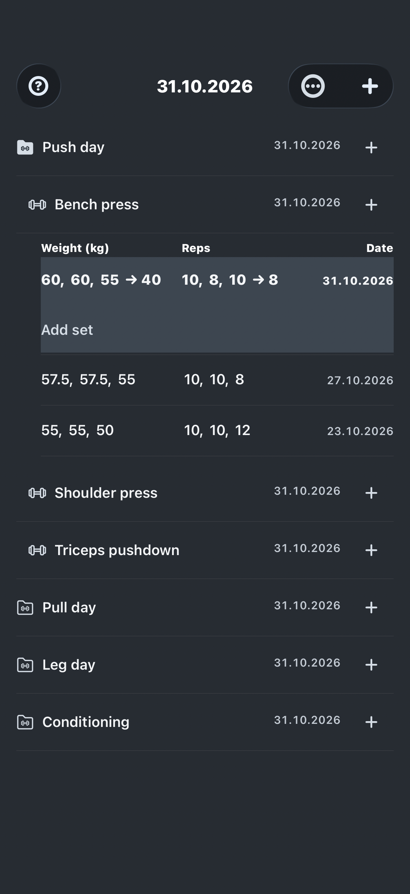

The user guide
A home for every set.
From your first folder to a safely stored backup. Start at the beginning, or jump to the part you need.
01 · Get started
Build your first training day.
Your journal starts empty. A folder can represent a training day, a muscle group, or any grouping that makes sense to you.
- Tap + in the Journal toolbar to create a top-level folder. Give it a name and tap OK.
- Tap + at the right of that folder, then choose Exercise. You can also choose Folder to create a folder inside it.
- Name the exercise and choose Weight training or Cardio. Tap OK.
- Tap the folder name or date to expand it. Tap again to collapse it.
The toolbar’s + always creates a top-level folder, even when another folder is open. Use the + on a folder row to add something inside it.

02 · Strength training
One set at a time.
- Tap + beside an exercise to start today’s workout.
- Enter kilograms and repetitions. Tap OK to save the set.
- Use Add set below today’s date, or the exercise’s +, to continue the same workout.
Use a decimal point for weight, such as 60.5, and whole numbers for repetitions. Zero is valid in either field. Commas and negative values are not accepted. OK becomes available when both fields are valid.
Link a drop set
Separate each step with a dash. For example, weights 60-40 and reps 10-8 record 60 kg × 10 followed by 40 kg × 8 as one linked set. Each weight needs exactly one repetition value.
Saved history uses an arrow between linked steps. Separate sets stay separate. Cancel discards an unsaved entry.
03 · Cardio
Record weight and time.
Choose Cardio when creating the exercise. An exercise’s type stays fixed after creation.
Enter kilograms and a time in minutes:seconds or minutes.seconds. Both 2:10 and 2.10 mean 2 minutes 10 seconds, not 2.1 minutes.
- Use two seconds digits, from
00to59. - Time must be greater than zero. For two whole minutes, enter
2:00. - For linked steps, enter weights such as
20-10with times such as2:10-1.30.
History displays time as m:ss. Previous weights can be suggested, but you enter the duration actually performed.
04 · Look back
Your last session, close at hand.
Tap an exercise’s name or date area to show its history underneath. An exercise with no records shows No workouts yet.
A new workout suggests weights from the most recent calendar date in that exercise’s history. Each new set uses the corresponding previous set’s weights. A previous drop set suggests its full weight chain.
Suggestions are editable. Repetitions and cardio times stay blank so you can record what you actually did. Suggestions are separate from saved results and are not included in CSV backups.
05 · Make a correction
A quick edit, or a whole workout.
Press and hold a saved value to choose Edit set or Manage workout.
| Action | How to save |
|---|---|
| Edit set | OK saves the correction. Cancel discards it. |
| Manage workout | Edit, add missing sets or drag handles to reorder. Tap Save at the top to save the whole draft. |
| Edit set inside Manage workout | OK updates only the workout draft. You still need to tap the workout’s Save. |
In Manage workout, the top Cancel button or dismissing the screen discards all unsaved workout changes. If saving fails, the draft stays open so you can retry or cancel.

Remove a drop step
Use Edit set and remove that step’s value from both fields. Removing a whole set removes its entire linked group.
Change the date
Press and hold a workout’s date, choose a calendar date, and tap OK. If the exercise already has a workout on that date, choose Combine to join their sets.
06 · Keep things in order
Arrange your routine.
Press and hold a folder or exercise for Rename, Move or Delete. When moving, select the destination and tap Move here.
For top-level ordering, use Journal → ••• → Reorder contents. To order items inside a folder, press and hold it and choose Reorder contents. Drag the handles, then tap Save. Cancel or dismissing discards the unsaved order.
Review deletion confirmations carefully. Export a backup first if you want to keep a separate copy of the records.
07 · Make it yours
A different view of the same work.
Open Journal → ••• → Theme for Wild, Iron light, Steel or Notes. Wild is the default. Each theme sets its own light or dark appearance.
Wild
Light, with green animal icons.
Iron light
Light, with orange gym icons.
Steel
Dark gray, with silver gym icons.
Notes
Dark, with yellow accents.

Choose a history layout
Open Journal → ••• → History layout.
- Compact lists: several sets per line, separated by commas.
- Aligned sets: each set starts on a new line.
- Weight × reps: pairs such as
60 kg × 10; linked steps use arrows. Cardio uses time in place of repetitions.
Changing the theme or layout does not change your saved workouts or an entry you are editing. Your choices are remembered on this device, separately from CSV backups.
08 · Back up your journal
A local journal. A separate backup.
Lift & Hop works offline and stores the journal on your iPhone. It does not provide live journal synchronization between devices.
Export a copy
- Open Journal → ••• → Export.
- Keep the timestamped filename, or enter a name of your own.
- Tap Share CSV, then use Save to Files to choose a destination.
- Complete the save and check that the file exists at that destination.
For an off-device backup, choose a location such as iCloud Drive when available and verify the copy there. Opening or closing the share sheet alone does not confirm that a backup was saved.

Import a file
Open Journal → ••• → Import → Choose CSV file. The app checks the entire file before changing any entries. Review the counts, then choose:
- Add to journal: keeps your current entries and adds separate copies at the end of Journal. Matching names and dates are not merged. Importing the same file again creates duplicates.
- Replace journal: removes the current journal and restores only what is in the selected file.
Replace applies to the whole journal. Anything missing from the selected backup is removed. Replacing with an empty backup removes all current entries. Use Export current journal first to keep a separate copy.
Canceling, an invalid file or a failed import leaves the existing journal saved. Completing an export during import does not start Add or Replace; you must still choose the import action.
Use a recovery backup
Before either Add or Replace, the app saves a recovery CSV on the same device. Open Import → Recovery backups, select a copy and use Replace journal to return to it. Choosing Add would create additional copies.
Recovery files remain after relaunch and are not automatically deleted. They help recover from an import, but do not protect against losing access to the phone. Keep an off-device export too.
Lift & Hop CSV exports preserve exercise types and cardio durations.
09 · Optional external tools
Take your records further.
Convert older workout notes
Use Import → Export AI import prompt to save instructions for converting existing records. Paste the prompt into your chosen AI chat, attach only the records you want converted, and answer questions about dates, units and unclear notation.
Check the resulting CSV against the original records before importing it. Choose Add to journal to retain your existing entries; Replace affects the entire journal.
Explore an exported journal
Turn on Include AI prompt in Export to include instructions for interpreting the CSV and creating spreadsheet tables or charts. Save both files, then provide them to your chosen service. This option starts off each time you open Export.
The app does not send your journal to an AI service automatically. Records you attach or share are handled under that service’s privacy practices. The prompt file alone contains no personal journal data.
Need a hand? Visit Support or read the Privacy policy.